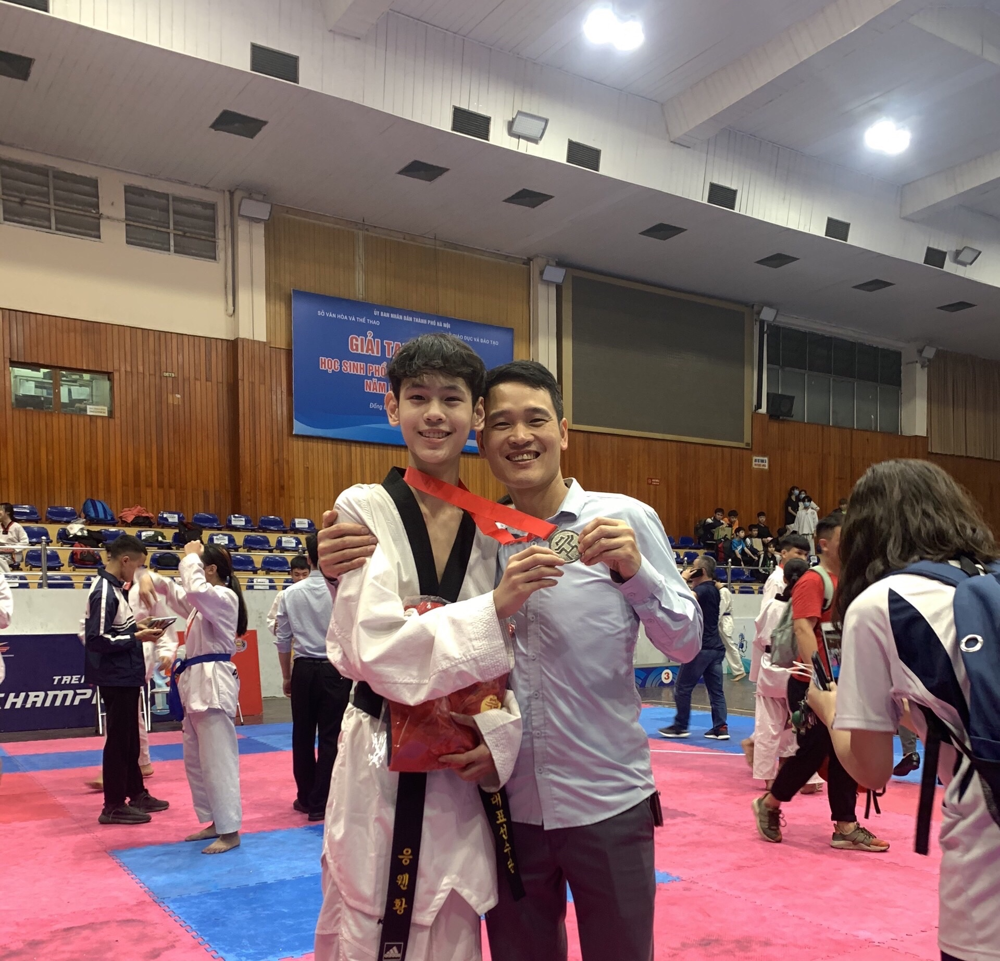

Bố của con. Năm nay bố 46 tuổi. Ở độ tuổi của con bây giờ, bố đã bắt đầu gánh vác gia đình.
Khi con càng lớn, con càng nhận ra khoảng cách giữa hai chúng ta không phải là tuổi tác, mà là sự im lặng.
Những sự im lặng mà ngày xưa con không hiểu, giờ đây con đã biết đó là cách những người đàn ông che giúp áp lực của mình.
Trong ký ức của con, bố chưa bao giờ lớn tiếng hay trách mắng con. Bố có thể khắt khe với chị, nhưng với con, mọi thứ luôn dừng lại ở những lời nhắc nhở tĩnh lặng và những cuộc trò chuyện thật bình thường.
Con luôn thầm biết ơn vì được thừa hưởng sự điềm đạm và khéo léo của bố. Chính những điều đó đã giúp con vững vàng hơn và nhận được sự quý mến từ mọi người, giống hệt như bố.
Suốt mười mấy năm qua, con quen với việc là một học sinh giỏi. Sự công nhận từ những người xung quanh từng khiến cái tôi của con lớn lên lúc nào không hay, khiến con đôi lúc tự cho mình quyền đặt ý kiến cá nhân lên trên người khác.
Nhưng khi bước ra khỏi vùng an toàn của trường phổ thông để tiến sâu hơn vào môi trường đại học, đặc biệt là khi tiếp xúc với những bạn bè và thầy cô thực sự xuất sắc, con mới thấy sự tự tin trước kia của mình có phần ngây ngô.
Gặp gỡ những con người ấy, đối diện với những áp lực học thuật mới mẻ, con nhận ra kiến thức của mình còn quá nhỏ bé. Bố à, năm vừa rồi con đã nhận một thất bại, dù không nghiêm trọng, nhưng con muốn chia sẻ với bố, đó là con đã không đủ điều kiện để mang về tờ giấy mà bố mẹ vẫn thấy con mang về mỗi năm. Việc không mang về tờ giấy khen quen thuộc năm vừa rồi không chỉ là một cú vấp ngã, mà là một gáo nước lạnh cần thiết để con tỉnh lại khỏi sự tự mãn.

Con đã tự trách mình rất nhiều. Nhưng chính lúc đó, sự im lặng và niềm tin không đòi hỏi của bố lại là thứ chạm đến con sâu nhất. Bố không tạo áp lực, không trách mắng.
Sự đồng hành thầm lặng ấy dạy con rằng, thất bại không phải để cúi đầu, mà để biết mình cần nỗ lực nhiều hơn. Con đã bớt đi những ảo tưởng, ngồi xuống cặm cụi làm những điều xứng đáng với cái tên bố đặt cho con.
Con hiểu rằng trưởng thành nhanh hơn không nằm ở lời hứa, mà ở cách con đứng lên sau cú vấp này.
“Con nhận ra rằng bố luôn là người đồng hành cùng con trên mọi cuộc thi lớn nhỏ. Dù bố có thể không hiểu gì về những cuộc thi ấy, nhưng chỉ cần nơi đó có con, bố sẽ luôn cổ vũ và đồng hành.”
Càng bước đi, càng nỗ lực với những công việc hiện tại, con càng hiểu những gánh nặng bố đã vượt qua, và con thấy mình may mắn nhường nào khi luôn có gia đình làm hậu phương.
Đi qua những năm tháng bồng bột, con nhận ra mình đang vô thức học theo bố. Từ cái cách bố nhẫn nại giải quyết từng vấn đề nhỏ trong gia đình mà không than vãn, đến cách gánh vác trách nhiệm một cách thầm lặng. Con đang nỗ lực mang đúng sự tĩnh tại đó vào con đường học tập và công việc của mình.
Chúc mừng sinh nhật tuổi 46 của bố.
Cảm ơn bố, vì đã luôn là điểm tựa tĩnh lặng của đời con.